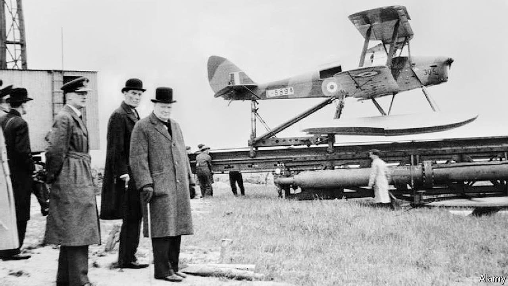

Many cite that the origin of drones dates back to 1849, when Austrian forces besieging Venice attempted to float some 200 incendiary balloons
each carrying a 24- to 30-pound bomb that was to be dropped from the balloon with a time fuse over the besieged city.
However, these balloons do not meet the current definition of drones, which according to The Oxford English Dictionary is “a remote-less
controlled piloted aircraft or missile”.
1910 - 1915
Going by the definition (Unmanned aerial vehicle), the first pilotless aircraft were developed after World War I in 1916.
Shortly after, the U.S. Army built the Kettering Bug , intended to be used as “aerial torpedoes” using gyroscopic controls.
The first Kettering Bug flew in 1918, but the war ended before it could be used.
1930 - 1945
Winston Churchill wait to watch the lauch of a de Havilland Queen be 1941
The first large-scale production, purpose-built drone was the product of Reginald Denny. He served with the British Royal Flying Corps during
World War I, and after the war, in 1919, emigrated to the United States to seek his fortunes in Hollywood as an actor. Denny had made a name
for himself as an actor, and between acting jobs, he pursued his interest in radio control model aircraft in the 1930s. He and his business
partners formed "Reginald Denny Industries" and opened a model plane shop in 1934 on Hollywood Boulevard known as "Reginald Denny Hobby Shops".
The shop evolved into the "Radioplane Company". Denny believed that low-cost RC aircraft would be very useful for training anti-aircraft gunners,
and in 1935 he demonstrated a prototype target drone, the RP-1, to the US Army. Denny then bought a design from Walter Righter in 1938 and began
marketing it to hobbyists as the "Dennymite", and demonstrated it to the Army as the RP-2, and after modifications as the RP-3 and RP-4 in 1939.
In 1940, Denny and his partners won an Army contract for their radio controlled RP-4, which became the Radioplane OQ-2. They manufactured nearly
fifteen thousand drones for the Army during World War II.
The true inventor of a radio-controlled aircraft that could fly out of sight was Edward M. Sorensen as evidenced by his US patents. His invention
was the first to be able to know from a ground terminal, what the airplane was doing, such as climbing, altitude, banking, direction, rpm and
other instrumentation. Without these patents the early radio-controlled aircraft could only operate within visual sight of the ground pilot.
1975 - 1995
Even though the U.S. was able to achieve a breakthrough in mass-manufacturing and supplying drones for the military, UAVs were often considered
unreliable and expensive. This perspective however changed in 1982 when Israel forces used unmanned aircrafts to gain victory over Syrian Air
Force with minimal losses. The U.S. also began the Pioneer UAV Program in 1980 to build an inexpensive drone for fleet operations. A joint
project by U.S. and Israel in 1986 further led to the development of RQ2 Pioneer – a medium sized reconnaissance aircraft.
Mini and micro versions of the UAVs were introduced in 1990, and the famous Predator was introduced in 2000, which was used in Afghanistan
for the search of Osama Bin Laden. In the following years, the number of small-sized, fixed-wing surveillance drones such as Raven, Wasp,
and Puma were introduced by an American technology company AeroVironment Inc. Raven is currently used by many countries, with around 20,000
units already deployed.